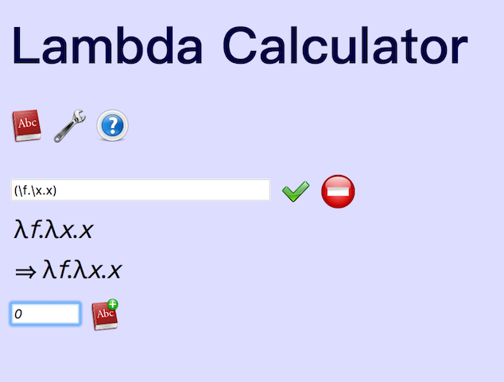

面向眼科医生的λ演算入门教程(5)
恭喜你已经看到这里了。我觉得Lambda calculus只有一个简单的规则，就是替换掉bound variables，这个叫β reduction。其他的什么左结合尽量延伸呐什么的都是因为大家懒得写括号带来的并发症。
Lambda calculus里面下面这些东西不是天然存在的，比如"1", "+", "2", "True", "False"，也没有预设的if语句，循环语句……这一切都是构造出来的，是发明或者发现出来的。
道生一
1=λf.λx.(f x) 1是一个函数（当然其实所有的lambda expression都是函数），1是有定义的，可以收两个参数，比如写1 a b是可以的。 2=λf.λx.f (f x) 3=λf.λx.f (f (f x)) 数字n就是x前面有n个f。 0=λf.λx.x 这些叫做Church numerals。Church“定义/构造/发明/发现”了1，我确实不知道应该用哪个词。这个结构可能是“发现”，但我觉得不止有这一种1，应该还有别的，从各种无限的可能性中找到一种，是不是可以算“发明”？
现在我们打开http://www.cburch.com/lambda/ ，这个interperter还有个定义字典的功能。我选它作为教具可是经过深思熟虑的。
我们可以把0，1，2，3都定义上去，为了输入方便，我按照输入方式把数字定义重新写一遍，你复制粘贴就可以了。（我个人喜欢多加括号确保没什么歧义） 0: (\f.\x.x) 1: (\f.\x.(f x)) 2: (\f.\x.(f (f x))) 3: (\f.\x.(f (f (f x))))
- 先输入0的定义 (\f.\x.x) 
- 在带有加号的字典图标前面给出命名，是“0”
- 要确认一下的话就点一下左上的字典图标，会打开字典

- 如果要调用，只要在输入框里输入0就可以了
注意这里并不是给(\f.\x.x)命名为0，这只是一个速记的缩略符号，严格完成替换的功能。
但是这里Church numeral的1，是不是真的“1”呢？也就是说“定义/构造/发明/发现”的1，要能够满足我们日常对1的理解和要求才行。比如要满足人们熟知的加法。 加法是这样的：
add=λm.λn.λf.λx.(m f (n f x))
来来来，也把add加入字典
add: \m.\n.\f.\x.(m f ( n f x))
然后我们试一试add 1 1，再试试add 1 2 看到了没， 1+1 真的 = 2 1+2 真的 = 3
我不知道你第一次看到这个结果时是怎样想的，我的感觉大概是看到有人折了一个纸鹤，然后吹了一口气，纸鹤自己拍拍翅膀飞走了！魔法啊，你说它是一它就真的是一啊！
Comments
Comments powered by Disqus